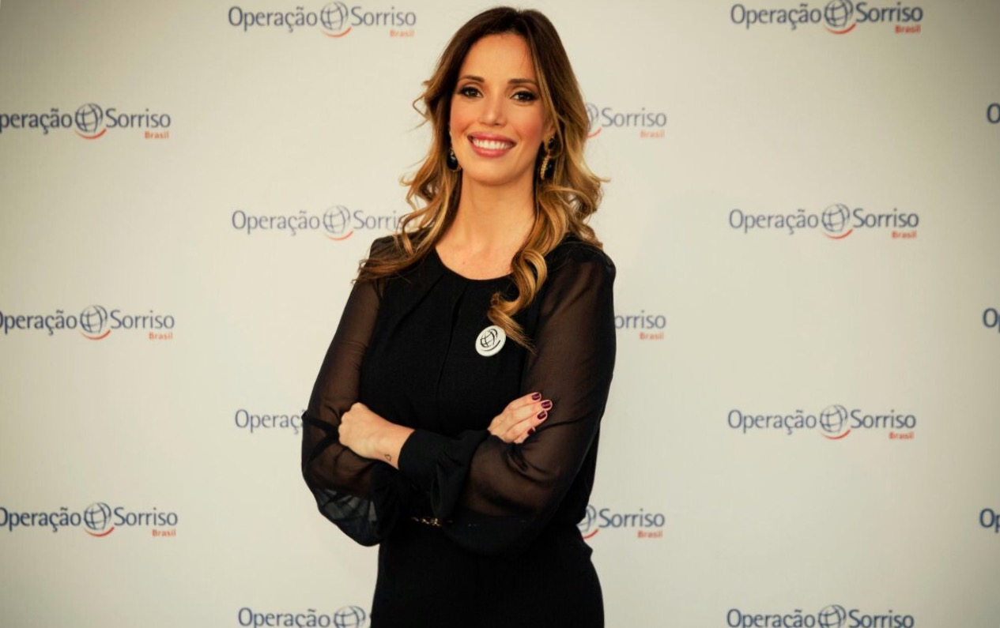

Captamos entrevista: Thais Mendes, Coordenadora de Captação de Recursos da Operação Sorriso
25 de Abril de 2017 às 07:00
“É um caminho sem volta”, diz profissional de marketing que deixou setor privado para se tornar captadora em ONG
Há pouco mais de três anos, Thais Mendes estruturou e se tornou responsável pelo departamento de captação da Operação Sorriso no Brasil, organização não governamental que reúne médicos voluntários para a realização de cirurgias reconstrutivas gratuitas em crianças com deformidades faciais, como lábio leporino e fenda palatina — instalada em 60 países, a ONG chegou por aqui em 1997.
Acostumada a lidar hoje com grandes empresas e major donors, Thais só começou a escrever sua história no Terceiro Setor há quatro anos, quando, motivada pela morte do pai e por sua história pessoal — ela também nasceu com má formação facial — , tornou-se doadora da mesma organização onde agora é captadora.
Em entrevista à Captamos, Thais fala sobre o processo que a levou a trocar o trabalho na iniciativa privada pelo realizado na Operação Sorriso e quais desafios encontrou no caminho.
Confira os principais trechos da entrevista.
Captamos: Como começou seu contato com o Terceiro Setor?
Thais Mendes: Sou formada em comunicação social. Trabalhei sempre em departamento de marketing de marcas de varejo da moda brasileira. Há quatro anos, perdi meu pai. Foi um momento muito difícil, mas que promoveu reflexões bem interessantes. Entre elas, sobre a minha carreira. O que eu estava construindo a partir de todas as oportunidades de educação que tive?
C: Você coloca o falecimento do seu pai como o momento de reflexão. O que isso lhe trouxe?
TM: Com essa perda, pela primeira vez, tomei consciência de que a vida tem começo, meio e fim. Passei a olhar para trás e a ver tudo o que havia construído. Percebi que estava muito distante daquilo que acreditava. Uma das formas, naquele momento, de me aproximar dos meus valores era fazendo uma doação. Descobri a Operação Sorriso, que trata de crianças que nascem com uma má formação facial com a qual também nasci. Tive a oportunidade de resolver o problema no sistema privado de saúde. Para muitas crianças, isso não era uma possibilidade. Fiz uma doação pessoal, que, naquele momento, chamou a atenção do presidente do conselho. Fui, então, convidada para uma conversa. Eles nem tinham departamento de captação estruturado. A Operação Sorriso aqui era um braço executor da matriz.
O presidente do conselho comentou comigo que queria expandir a atuação no país. Perguntou se eu teria interesse em participar do processo seletivo e aceitei. Naquele momento, eu ainda nem tinha muito ideia do que era, mas, a partir do que ele me explicou e do que fui pesquisando, entendi que, na verdade, tinha muito a ver com o que eu já fazia, mas, ao invés de um produto ou serviço, trabalharia por uma causa.
C: Como foi o desafio de não só mudar de lado, mas de chegar estruturando um setor de captação que não existia?
TM: Demoramos seis meses para entender em que momento estávamos e quais eram as possibilidades. Fizemos um estudo sobre o setor e ficamos assustados, pois vimos que a grande maioria das organizações trabalhava com pessoa física, mas com estratégias que demandavam um investimento inicial muito alto. Face to face, mala direta, direct call, todas essas estratégias exigem uma expertise e um investimento inicial que não tínhamos. Mas tínhamos o relacionamento com grandes corporações em outros países. Pedimos a nossa matriz que nos ajudasse a abrir portas com essas empresas. Funcionou. Foi natural também que eu buscasse no meu networking pessoas que pudessem contribuir e, a partir desse grupo, surgiram outras.
C: Quando você chegou ao setor social, percebeu que precisava correr atrás de certas habilidades? O que deu para aplicar do setor privado?
TM: O principal desafio foi o emocional. Como me envolvo com essa causa, com todos os desafios que ela traz sem que isso me abale, desvie minha capacidade analítica, me desvie da estratégia que traçamos para a organização? Mas, ao mesmo tempo, como eu não perco minha habilidade de emocionar as pessoas? É preciso também parar e entender o setor em que está atuando, quem são os principais players, as oportunidades de mercado antes de sair fazendo. Muitas organizações vão aprendendo no tapa, porque existe um senso de emergência muito grande para captar dinheiro e manter aquilo vivo, mas os movimentos precisam ser pensados. É muito importante a paciência, principalmente com as grandes corporações, que trabalham com processos mais burocráticos, e com grandes doadores, que estão acostumados a tomar suas decisões com liberdade e calma. Tem de entender o tempo daquela pessoa para pedir o dinheiro na hora certa. Não pode acuar e não pode deixá-la muito solta.
C: Na Operação Sorriso, vocês têm apenas doadores pessoas jurídica ou também pessoa física?
T: Também temos grandes doadores pessoa física. Na Operação Sorriso, chamamos de major donors apenas pessoa física. Esse conceito varia em cada organização. Há aquelas que consideram major donor quem contribui com mais de R$ 2 mil por ano. Na Operação Sorriso, é acima de R$ 10 mil. Trabalhamos com um ticket médio bem alto.
C: Como vocês cultivam os doadores?
TM: Precisa entender o momento de cada um. Temos uma régua de relacionamento. É preciso fazer follow up, mantê-los informados do que estamos fazendo, quais os resultados. Eu mantenho relacionamento próximo com alguns dos major donors, sei as datas de aniversário, mando presentes em datas comemorativas do varejo. Não vai ficar ligando todo dia para a pessoa, mas tem de estar presente. Muitos dos grandes doadores se tornaram meus amigos, é uma relação que vai além da organização. Trabalhar juntos em prol de uma causa aproxima as pessoas.
C: Como é o trabalho de vocês na hora de procurar empresas?
TM: Um movimento que tenho visto é que antes as empresas vinham muito preocupadas em desenvolver suas estratégias de responsabilidade social com base no público externo, no consumidor. Agora, vejo um movimento diferente. A preocupação maior é: “Como deixo meus colaboradores satisfeitos com a minha atuação de responsabilidade social?” As empresas entenderam que, para conseguir reter seus talentos e manter seus colaboradores satisfeitos, precisam trabalhar com eles primeiro. Quando as empresas procuram a gente, sempre vêm com esse desafio. Como faço para manter meus colaboradores engajados? Como uso isso para que se sintam orgulhosos de fazer parte desse time?
C: Como você lidou com os tempos e dinâmicas diferentes do setor privado e do Terceiro Setor?
TM: Essa foi uma das minhas maiores dificuldades. No setor privado, os processo são mais burocráticos, mas há uma estrutura muito maior, mais pessoas trabalhando, então, é possível otimizar o tempo. No Terceiro Setor, nas organizações que conheço, os times são muito mais enxutos e há uma urgência maior em se alcançar resultados. Tem de encontrar a melhor equação para conciliar os recursos, as demandas e a urgência versus o tempo da empresa [doadora], que não vai aprovar o projeto amanhã. É um desafio. As empresas têm outras prioridades. Como me torno relevante para estar entre essas prioridades e conseguir resultados mais rápido? Precisa profissionalizar as equipes e os processos, e isso tem um custo, é difícil para as organizações conseguirem. Precisamos crescer e, para isso, é necessário investir, e vai chegar o momento em que vamos investir no desenvolvimento da organização, e não tanto no fim.
C: Vocês levam doadores ou potenciais doadores nas missões?
TM: Os dois. Meu papel é acompanhar atuais doadores ou prospects. Apresento todo o processo e, se ele tiver interesse, pode acompanhar uma cirurgia e conversar com os pacientes. É uma experiência muito rica. Foi o que aconteceu comigo lá atrás, e que agora se repete. Eu fui a primeira a ir como doadora. Entendi que aquilo era uma oportunidade, era nossa galinha dos ovos de ouro. Temos de atrelar isso a doações que sejam robustas ou a potenciais doações de médio prazo. É uma experiência transformadora. O que fazemos é muito concreto. A criança entra de um jeito e sai de outro. Para mim, foi uma oportunidade de trazer um novo olhar para minha história, e vejo que, para as outras pessoas, apesar de não terem nascido com essa má formação, poder conversar com os beneficiados e entender suas realidades pode ser enriquecedor. Nunca vi alguém se arrepender de ir. Muito pelo contrário, vai e implora para ir de novo.
C: Isso ajuda no momento de pedir um aumento da doação ou doação extra?
TM: Sim. Quando você engaja um doador, ele tem um tempo de encantamento. É preciso explorar o máximo possível isso. Depois, ele não some, mas não se consegue trabalhar com ele com tanta dedicação. Durante uns três meses, é impressionante a quantidade de portas que consegue abrir, de pessoas que ele consegue articular.
C: Você pensa em voltar em algum momento para o setor privado?
TM: Pensei, sim, mas é um caminho sem volta. Descobri a importância de ter um propósito no meu trabalho. É uma jornada espiritual, é uma oportunidade de conseguir me desenvolver como pessoa. Minha mãe sempre falava: “Mas o que você quer ser quando crescer?” Não sei, mas sempre soube que queria ter orgulho do que eu fosse construir. Quando meu pai faleceu, eu me recordo de que, no mês seguinte, ninguém mais se lembrava de qual carro ele tinha, qual relógio, para onde viajava ou não, mas nenhuma pessoa deixava de me parar na rua para dizer que meu pai era de excelente caráter, de grande coração. Era isso que eu queria para mim. Não queria ser só mais uma pessoa que tem isso ou aquilo.
Há pouco mais de três anos, Thais Mendes estruturou e se tornou responsável pelo departamento de captação da Operação Sorriso no Brasil, organização não governamental que reúne médicos voluntários para a realização de cirurgias reconstrutivas gratuitas em crianças com deformidades faciais, como lábio leporino e fenda palatina — instalada em 60 países, a ONG chegou por aqui em 1997.
Acostumada a lidar hoje com grandes empresas e major donors, Thais só começou a escrever sua história no Terceiro Setor há quatro anos, quando, motivada pela morte do pai e por sua história pessoal — ela também nasceu com má formação facial — , tornou-se doadora da mesma organização onde agora é captadora.
Em entrevista à Captamos, Thais fala sobre o processo que a levou a trocar o trabalho na iniciativa privada pelo realizado na Operação Sorriso e quais desafios encontrou no caminho.
Confira os principais trechos da entrevista.
Captamos: Como começou seu contato com o Terceiro Setor?
Thais Mendes: Sou formada em comunicação social. Trabalhei sempre em departamento de marketing de marcas de varejo da moda brasileira. Há quatro anos, perdi meu pai. Foi um momento muito difícil, mas que promoveu reflexões bem interessantes. Entre elas, sobre a minha carreira. O que eu estava construindo a partir de todas as oportunidades de educação que tive?
C: Você coloca o falecimento do seu pai como o momento de reflexão. O que isso lhe trouxe?
TM: Com essa perda, pela primeira vez, tomei consciência de que a vida tem começo, meio e fim. Passei a olhar para trás e a ver tudo o que havia construído. Percebi que estava muito distante daquilo que acreditava. Uma das formas, naquele momento, de me aproximar dos meus valores era fazendo uma doação. Descobri a Operação Sorriso, que trata de crianças que nascem com uma má formação facial com a qual também nasci. Tive a oportunidade de resolver o problema no sistema privado de saúde. Para muitas crianças, isso não era uma possibilidade. Fiz uma doação pessoal, que, naquele momento, chamou a atenção do presidente do conselho. Fui, então, convidada para uma conversa. Eles nem tinham departamento de captação estruturado. A Operação Sorriso aqui era um braço executor da matriz.
O presidente do conselho comentou comigo que queria expandir a atuação no país. Perguntou se eu teria interesse em participar do processo seletivo e aceitei. Naquele momento, eu ainda nem tinha muito ideia do que era, mas, a partir do que ele me explicou e do que fui pesquisando, entendi que, na verdade, tinha muito a ver com o que eu já fazia, mas, ao invés de um produto ou serviço, trabalharia por uma causa.
C: Como foi o desafio de não só mudar de lado, mas de chegar estruturando um setor de captação que não existia?
TM: Demoramos seis meses para entender em que momento estávamos e quais eram as possibilidades. Fizemos um estudo sobre o setor e ficamos assustados, pois vimos que a grande maioria das organizações trabalhava com pessoa física, mas com estratégias que demandavam um investimento inicial muito alto. Face to face, mala direta, direct call, todas essas estratégias exigem uma expertise e um investimento inicial que não tínhamos. Mas tínhamos o relacionamento com grandes corporações em outros países. Pedimos a nossa matriz que nos ajudasse a abrir portas com essas empresas. Funcionou. Foi natural também que eu buscasse no meu networking pessoas que pudessem contribuir e, a partir desse grupo, surgiram outras.
C: Quando você chegou ao setor social, percebeu que precisava correr atrás de certas habilidades? O que deu para aplicar do setor privado?
TM: O principal desafio foi o emocional. Como me envolvo com essa causa, com todos os desafios que ela traz sem que isso me abale, desvie minha capacidade analítica, me desvie da estratégia que traçamos para a organização? Mas, ao mesmo tempo, como eu não perco minha habilidade de emocionar as pessoas? É preciso também parar e entender o setor em que está atuando, quem são os principais players, as oportunidades de mercado antes de sair fazendo. Muitas organizações vão aprendendo no tapa, porque existe um senso de emergência muito grande para captar dinheiro e manter aquilo vivo, mas os movimentos precisam ser pensados. É muito importante a paciência, principalmente com as grandes corporações, que trabalham com processos mais burocráticos, e com grandes doadores, que estão acostumados a tomar suas decisões com liberdade e calma. Tem de entender o tempo daquela pessoa para pedir o dinheiro na hora certa. Não pode acuar e não pode deixá-la muito solta.
C: Na Operação Sorriso, vocês têm apenas doadores pessoas jurídica ou também pessoa física?
T: Também temos grandes doadores pessoa física. Na Operação Sorriso, chamamos de major donors apenas pessoa física. Esse conceito varia em cada organização. Há aquelas que consideram major donor quem contribui com mais de R$ 2 mil por ano. Na Operação Sorriso, é acima de R$ 10 mil. Trabalhamos com um ticket médio bem alto.
C: Como vocês cultivam os doadores?
TM: Precisa entender o momento de cada um. Temos uma régua de relacionamento. É preciso fazer follow up, mantê-los informados do que estamos fazendo, quais os resultados. Eu mantenho relacionamento próximo com alguns dos major donors, sei as datas de aniversário, mando presentes em datas comemorativas do varejo. Não vai ficar ligando todo dia para a pessoa, mas tem de estar presente. Muitos dos grandes doadores se tornaram meus amigos, é uma relação que vai além da organização. Trabalhar juntos em prol de uma causa aproxima as pessoas.
C: Como é o trabalho de vocês na hora de procurar empresas?
TM: Um movimento que tenho visto é que antes as empresas vinham muito preocupadas em desenvolver suas estratégias de responsabilidade social com base no público externo, no consumidor. Agora, vejo um movimento diferente. A preocupação maior é: “Como deixo meus colaboradores satisfeitos com a minha atuação de responsabilidade social?” As empresas entenderam que, para conseguir reter seus talentos e manter seus colaboradores satisfeitos, precisam trabalhar com eles primeiro. Quando as empresas procuram a gente, sempre vêm com esse desafio. Como faço para manter meus colaboradores engajados? Como uso isso para que se sintam orgulhosos de fazer parte desse time?
C: Como você lidou com os tempos e dinâmicas diferentes do setor privado e do Terceiro Setor?
TM: Essa foi uma das minhas maiores dificuldades. No setor privado, os processo são mais burocráticos, mas há uma estrutura muito maior, mais pessoas trabalhando, então, é possível otimizar o tempo. No Terceiro Setor, nas organizações que conheço, os times são muito mais enxutos e há uma urgência maior em se alcançar resultados. Tem de encontrar a melhor equação para conciliar os recursos, as demandas e a urgência versus o tempo da empresa [doadora], que não vai aprovar o projeto amanhã. É um desafio. As empresas têm outras prioridades. Como me torno relevante para estar entre essas prioridades e conseguir resultados mais rápido? Precisa profissionalizar as equipes e os processos, e isso tem um custo, é difícil para as organizações conseguirem. Precisamos crescer e, para isso, é necessário investir, e vai chegar o momento em que vamos investir no desenvolvimento da organização, e não tanto no fim.
C: Vocês levam doadores ou potenciais doadores nas missões?
TM: Os dois. Meu papel é acompanhar atuais doadores ou prospects. Apresento todo o processo e, se ele tiver interesse, pode acompanhar uma cirurgia e conversar com os pacientes. É uma experiência muito rica. Foi o que aconteceu comigo lá atrás, e que agora se repete. Eu fui a primeira a ir como doadora. Entendi que aquilo era uma oportunidade, era nossa galinha dos ovos de ouro. Temos de atrelar isso a doações que sejam robustas ou a potenciais doações de médio prazo. É uma experiência transformadora. O que fazemos é muito concreto. A criança entra de um jeito e sai de outro. Para mim, foi uma oportunidade de trazer um novo olhar para minha história, e vejo que, para as outras pessoas, apesar de não terem nascido com essa má formação, poder conversar com os beneficiados e entender suas realidades pode ser enriquecedor. Nunca vi alguém se arrepender de ir. Muito pelo contrário, vai e implora para ir de novo.
C: Isso ajuda no momento de pedir um aumento da doação ou doação extra?
TM: Sim. Quando você engaja um doador, ele tem um tempo de encantamento. É preciso explorar o máximo possível isso. Depois, ele não some, mas não se consegue trabalhar com ele com tanta dedicação. Durante uns três meses, é impressionante a quantidade de portas que consegue abrir, de pessoas que ele consegue articular.
C: Você pensa em voltar em algum momento para o setor privado?
TM: Pensei, sim, mas é um caminho sem volta. Descobri a importância de ter um propósito no meu trabalho. É uma jornada espiritual, é uma oportunidade de conseguir me desenvolver como pessoa. Minha mãe sempre falava: “Mas o que você quer ser quando crescer?” Não sei, mas sempre soube que queria ter orgulho do que eu fosse construir. Quando meu pai faleceu, eu me recordo de que, no mês seguinte, ninguém mais se lembrava de qual carro ele tinha, qual relógio, para onde viajava ou não, mas nenhuma pessoa deixava de me parar na rua para dizer que meu pai era de excelente caráter, de grande coração. Era isso que eu queria para mim. Não queria ser só mais uma pessoa que tem isso ou aquilo.

Thais Mendes,
Coordenadora de Captação da Operação Sorriso
Notícias mais populares
Gestão
Em agosto de 2017, a revista ÉPOCA e o Instituto Doar divulgaram a primeira ediç&...
Contexto e tendências
Criado para tornar mais transparentes as parcerias entre a administração públic...
Profissional captador
A captação de recursos é fundamental para a sustentabilidade de uma organiza&cc...